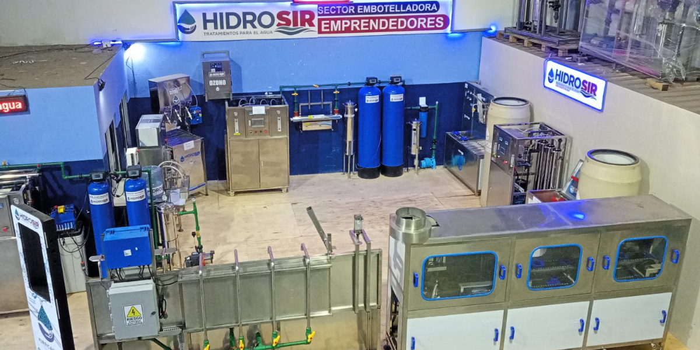
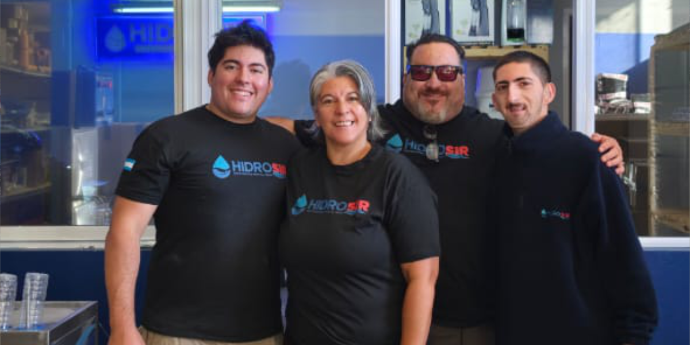
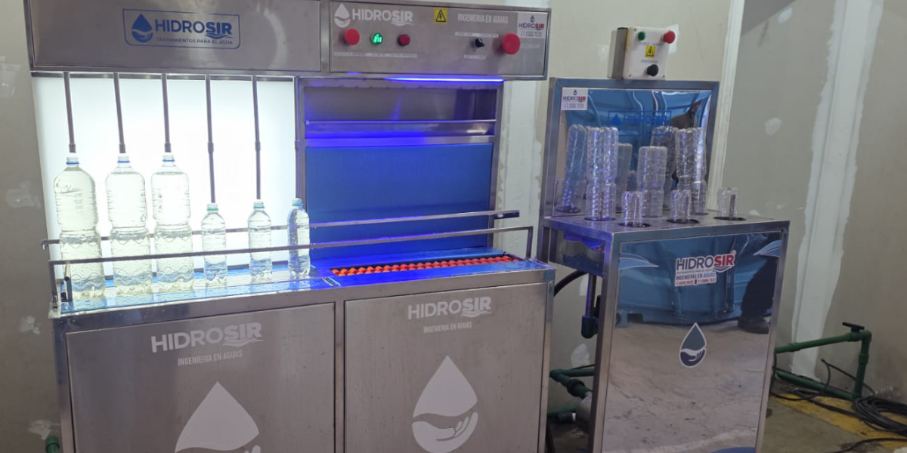
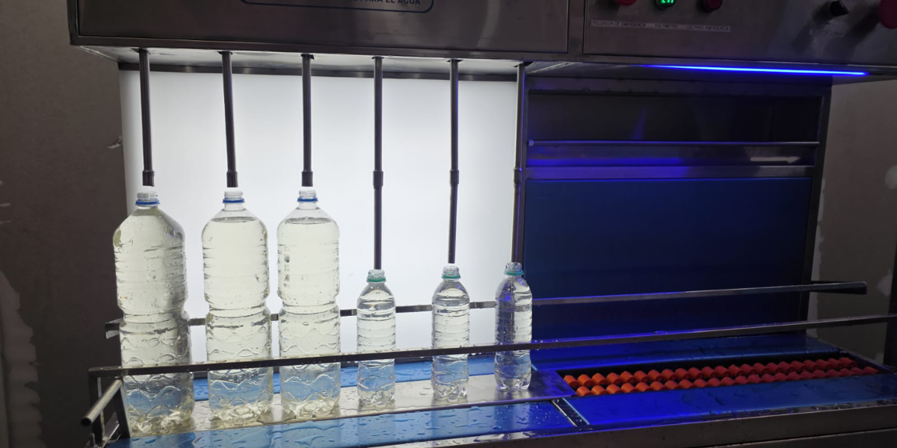
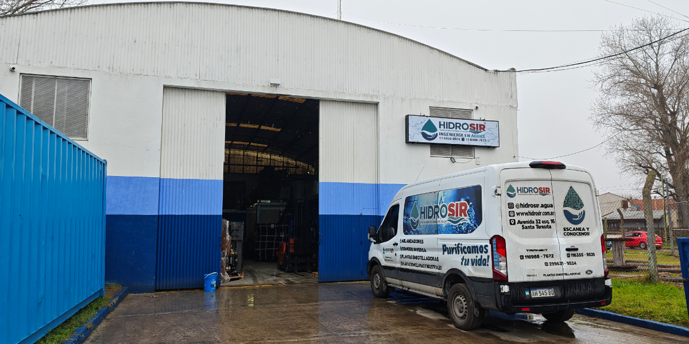

Descubre los sistemas definitivos de purificación. Desde la precisión de la ósmosis inversa hasta la automatización con PLCs, aprende cómo el agua de calidad superior transforma tu negocio.
RESERVAR MI ACCESO AHORASi manejas maquinaria industrial, sistemas de riego o necesitas estándares de purificación impecables, sabes perfectamente que no cualquier agua sirve.
Desgaste prematuro de tus costosos equipos debido a la alta conductividad e incrustaciones.
Sistemas de filtrado convencionales que no dan la talla frente a las normativas de tu producción.
Procesos manuales ineficientes que te hacen perder tiempo y exigen supervisión constante.
Es hora de evolucionar al siguiente nivel del tratamiento integral del agua.
Comprende cómo implementar membranas de alta eficiencia para llevar los niveles de conductividad a su point óptimo, garantizando pureza absoluta.
Más allá de la arena. Domina el uso estratégico de resinas catiónicas, zeolita y carbón activado para eliminar metales pesados de raíz.
El futuro del agua es digital. Descubre cómo la integración de PLCs y la configuración de pantallas industriales te dan el control milimétrico.
Aprende a prolongar la vida útil de tus ablandadores e instalaciones con protocolos de servicio técnico preventivos precisos.
Ingeniería aplicada y montajes de precisión diseñados para una máxima durabilidad.





Con bases firmes en el Partido de La Costa y más de dos décadas de conocimiento aplicado en la región, Hidrosir no es solo un proveedor de equipos; es el puente entre la ingeniería, la tecnología y el agua pura.
Nos especializamos en el diseño, instalación y capacitación de sistemas integrales. No adivinamos: medimos, calculamos e implementamos soluciones definitivas.
Teníamos problemas graves de contaminación y sarro que afectaban nuestras instalaciones. El equipo de Hidrosir realizó un servicio completo, optimizó el clorador y nos instaló un sistema de ósmosis que nos cambió la operatividad por completo. Altamente recomendados para trabajos técnicos complejos.
Deja tus datos para coordinar una consultoría técnica o reservar tu lugar en nuestra próxima sesión estratégica personalizada.
* Cupos mensuales limitados para auditorías en el Partido de La Costa y zonas aledañas.